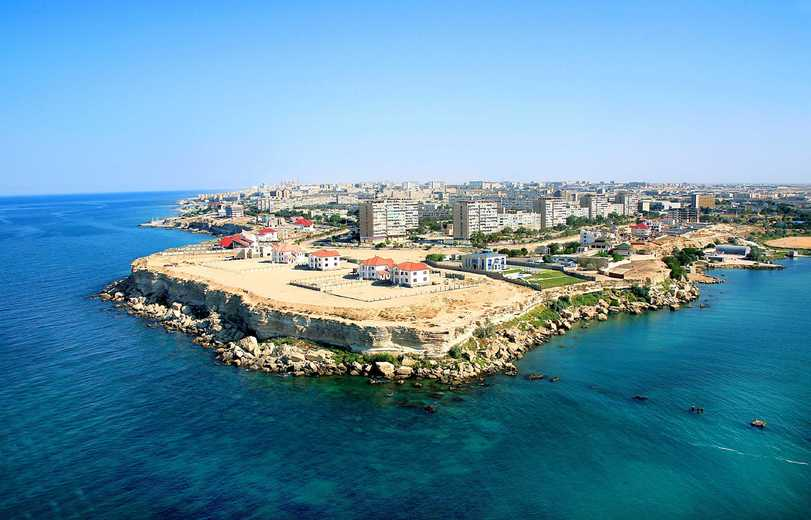

Aktau
 Click me!
Aktau is a city in Kazakhstan, located on the eastern shore of
the Caspian Sea. From 1964 to 1991, the city was known as
Shevchenko. Its former name was given due to the
eponymous Ukrainian poet's period of exile in the area. It is located on
the Mangyshlak Peninsula and is the capital of the Mangystau Region.
Aktau is known for its unique block address system. Almost no streets in Aktau have names; instead, addresses generally consist of three numbers: the district number (also known as micro-region/micro-district/block), the building number, and the apartment number. This is because Aktau was originally planned as a camp for the workers of the oil industry
Contents
History
 The territory of what is now Aktau was once inhabited by ancient tribes
of Scythians. Archeological finds in the area include old settlements
and utensils. The current territory of Mangystau hosted a spur route of
the northern silk road, which resulted in the founding of several Sufi
shrines in Aktau's vicinity. However, the area had very little
population prior to Soviet times and no cities of any relevancy, almost
certainly due to the scarcity of fresh water.
The territory of what is now Aktau was once inhabited by ancient tribes
of Scythians. Archeological finds in the area include old settlements
and utensils. The current territory of Mangystau hosted a spur route of
the northern silk road, which resulted in the founding of several Sufi
shrines in Aktau's vicinity. However, the area had very little
population prior to Soviet times and no cities of any relevancy, almost
certainly due to the scarcity of fresh water.
In 1958, uranium prospectors settled the site of modern Aktau, naming
the settlement Melovoye after the bay on which it
stood. After the development of the uranium deposits was started, the
settlement was closed and renamed Guryev-20. In 1963,
its closed status was lifted, town status was granted, and the name was
changed to Aktau. However, in 1964 it was given yet another name,
Shevchenko, to honor the Ukrainian poet Taras
Shevchenko who spent 1850-1857 in political exile in Novopetrovskoye,
about 100 km (62 mi) to the northwest. This Ukrainian name for the city
may have been granted due to the large number of Ukrainian workers who
settled in the city. Their descendants are often easily identifiable to
this day with many having surnames ending in '-enko'. After the
dissolution of the Soviet Union and Kazakhstan gaining independence, the
name Aktau
was restored in 1991, but the city's airport still retains SCO as its
IATA code.
Nuclear Power Plant
Aktau was once the site of a nuclear power station. The BN-350 FBR went online in 1973, and was shut down in 1999. The long-term plans of the Government of Kazakhstan include the construction of a new nuclear power station to be built near the site. In addition to producing plutonium, BN-350 was used to provide power and for desalination to supply fresh water to the city. The current station is not considered powerful enough to supply the fresh water and energy needed at this time, and blackouts are a common occurrence.
Climate and Leisure
Aktau experiences a cold desert climate (Köppen BWk), with warm to hot dry summers and cold winters, with a mean January temperature of -0.5 °C (31.1 °F), and a mean July temperature of +25.55 °C (77.99 °F). It is notable that most of the city of Aktau lies below sea level in the Caspian Depression and is proximate to the lowest point in Kazakhstan and the former Soviet Union at Karagiye.
The beach season lasts from May to September, with an average sea temperature of +21 °C (70 °F). Aktau has both rocky hills and sandy beaches along the seashore. There are several modern resorts on the coast to the south of the city. The beaches of the Caspian shore are popular in the summer, due to the hot climate of the season. Tourists come mainly from other parts of Kazakhstan. The city has a variety of local hotels and western chains of Renaissance and Holiday Inn.
In 2021, it was announced that three rare species of palms with resistance to freezing are being grown as part of an experiment in the Aktau region. The experiment is being performed by the Mangyshlak Experimental Botanical Garden in Aktau city.
Sights
The main attraction in the city remains the Caspian Sea with its long side walks and beaches. Other sights include:
- World War II Eternal Flame Memorial in a shape reminiscent of a traditional yurt
- MiG Monument at the Victory Mall
- Regional Studies and History Museum
- The Drama Theatre
- Yntymak Square
- Monuments of Famous people of the past: Kashagan, Zhalau Mynbayev and Taras Shevchenko
Sports
Aktau is the home of football club FC Caspiy. The club's home ground is Zhastar Stadium which has a capacity of 5,000. In 2019, they finished 2nd place in the Kazakhstan First Division and gained outright promotion to the Kazakhstan Premier League, the top division of football in Kazakhstan.
Time Capsule
In 1967 the people of Aktau erected a time capsule to send a message to future generations of the Mangyshlak Peninsula, including names of people who helped to build the town in the desert. The letter was put in a metallic cylinder in a triangular marble urn. It was opened in November 2017. The capsule is located in District 2, opposite the 'Kazakhstan Trade Center'.
A ceremony to open the capsule was arranged and people traveled from far and wide to attend. This was subsequently postponed and then cancelled when it became known that capsule was, in fact, missing. Previously the capsule had been buried in another part of the town but building works in that location caused it to be relocated to the District 2 location. The capsule did not make the move. An official from the time of the creation of the capsule who had been involved in the drafting of a message to be included within the capsule was able to remember word for word the message that was written which by all accounts contained a theme of hope for the future.
List of videos
Click here!